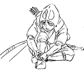
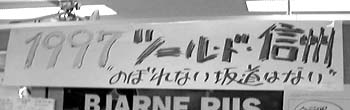
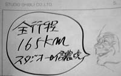
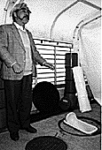

制作日誌 1996年11月
96.11.01（金）
新人の応募がどっと来る。例年並みの人数までいきそう。ただ美術部門だけなぜか例年の2倍近くの人数に達している。
96.11.02（土）
宮崎、近藤、篠原の3氏と来年の研修責任者について話し合う。今回は研修生出身者から起用したい、で意見が一致し、何人かの候補の中から最終的に研修1期生の小西賢一氏に決定する。
96.11.05（火）
動画部門の書類審査を実施。15名が一次審査合格。
1昨日鍼に行ってきたにもかかわらず、宮崎監督は絶不調。
96.11.07（木）
篠原さんが手持ちを終わらせる。明日の午後打ち合わせを行うことに。すぐに、作打ちを取材したいと言っていた浦谷さんに連絡するも、既に帰宅したとのこと。
96.11.08（金）
浦谷さんに連絡が付き、1時頃にカメラマンが到着。作打ちをカメラに納める。篠原さん打ち合わせCUT1,352～1,361、1,364まで11CUT。
宮崎監督から突然、今や日本を代表するカウンターテナー米○○一氏に「もののけ姫」の歌を歌ってもらいたいと提案がある。早速出たばかりのCD「母の○ 日○歌○集」を購入。（すみません、今はまだ内緒です）
大のチャンバラファンである鈴木プロデューサーが日本刀（模造刀）を購入。早速社内で振り回していた。
96.11.09（土）
ラッシュチェックあり。
浦谷さん来社。日本刀を腰に下げ、社内を歩き回る鈴木プロデューサー等を撮影。
96.11.11（月）
来年の夏に、社内スタッフを中心として、宮崎監督の別荘まで、165キロを一気に走り切る自転車レース「ツール・ド・信濃境」が行われる予定であるが、宮崎監督が名称を「ツール・ド・信州」に改め、大々的にポスターを作り、壁に張り出す。参加公募用のものと、既に参加を表明している14人のプロフィールを写真入りで紹介し、宮崎監督のコメントも加えたエントリーポスターの2点。それを見た、日本テレビの奥田プロデューサーが100キロ近くの巨体を揺すりながら「俺も昔は自転車に乗っていたのだ。エントリーしたい」と参加を表明、大会審査委員長・宮崎監督の許可も下り、参加者は総勢15人となった。もちろんエントリーポスターにも写真入りで登場。しかし、それを見た鈴木プロデューサーは、内心「奥田さんに死なれては困る」とでも思ったのか渋い顔。



96.11.14（木）
宮崎監督が買った、トリケラトプス頭部のレプリカ化石がジブリに届く。多くの社員が見守る中、屋上の芝生の上に設置。
96.11.16（土）
宮崎監督がカタツムリをデザインした「ツール・ド・信州」のユニフォームを考案。本気で作る気らしい。
96.11.19（火）
デジタル含みのCUTが全部で100CUT近くになってしまっている。そこで奥井さんと、簡単なデジタル合成のCUTは「耳をすませば」の時にお世話になったイマジカのフラミンゴルームに出す方向で検討を始める。
宮崎監督が、小西、芳尾、山森、桑名の4名を前にしてタタリ神の描き方の講習を行う。
鈴木プロデューサーから「総CUT数が1,600CUTになりそうだ」と話がある。ついでに「なんとかして」とも。
96.11.20（水）
昨日高坂さんが、帰宅途中車と接触、顔面打撲他、身体中に擦り傷を負う。自転車もタイヤやフロントフォークがおしゃかになったそうだ。過失は全面的に車にあるらしい。面白いのは、相手の保険会社から「あの自転車はいつ、いくらで買ったものですか？」と質問のTELがあった際、「今年4月に40万円で買いました」と答えたところ、あまりの値段の高さにしばらく絶句していたとか。
96.11.22（金）
「魔女の宅急便」「海がきこえる」の近藤勝也氏、原画で「もののけ姫」参加決定。12月頭から出社予定。
96.11.23（土）
休日にもかかわらず、大塚、篠原、吉田、稲村、粟田、山森、山田、桑名、遠藤、賀川、大谷、笹木ら原画メンバーの多くが出社。
96.11.25（月）
月に一度の月末休みでジブリはお休み。この休みを利用して、高坂、伊藤、斎藤氏と宮崎監督の別荘まで車でツール・ド・信州の下見を行う。冗談じゃなくきついコースだ。ついでに、毎年恒例となっている伊藤君の忘年会用ビデオの撮影も行う。
96.11.26（火）
昨年7月にジブリの入社テストを受けたデイビッド・エンチナス氏の在留許可証明書がようやく発行される。長かった～。ビザの関係上2月から出社予定。
背景上がりを持って、男鹿さん来社。
96.11.27（水）
コミックボックス三好氏が、半年がかりで作り上げたユーリ・ノルシュテイン特集号を持って来社。社内にちょっと声をかけたら、持ってきた20冊があっと言う間に完売。世間の人は忘れても、ジブリではノルシュテイン人気は健在だ。
96.11.28（木）
大塚康生さんの同人誌「大塚康生のおもちゃ箱」が送られてくる。昔の東映動画時代の宮崎、高畑両監督の写真や、中傷絵画展と題された、いたずら描きがべらぼうに面白く、社内で大受け。宮崎監督も自分の机で、若き日を思い出したのか、一人読みフケっていた。社員の約半数が購入。
クロマカラーから前回リテークとなった絵の具が到着。今回は大丈夫なようだ。
96.11.30（土）
東小金井駅で人身事故。ＣＧ部菅野氏が、出社途中に、事故直後の血だらけの現場を目撃。テレビ局魂が沸き上がったのか、現場の様子から、警官の事情聴取まで取材、会社に来てから、「肉片が…」と現場を克明に再現していた。
同人誌「おもちゃ箱」のサイン会に来る予定だった大塚康生氏だったが、雨のため延期。現在、公道を走れる車が原付きのホンダモトラしかないからだそうだ。
ラッシュチェックが行われる。宮崎監督が整体に行ったため、午後からとなる。
| 次のページへ |
| 日誌索引へ戻る |
| 「もののけ姫」トップページへ戻る |